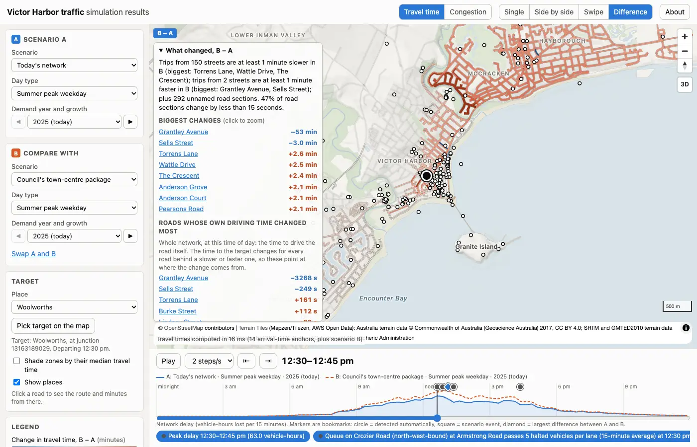
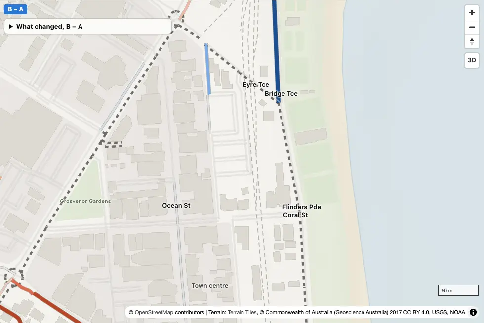
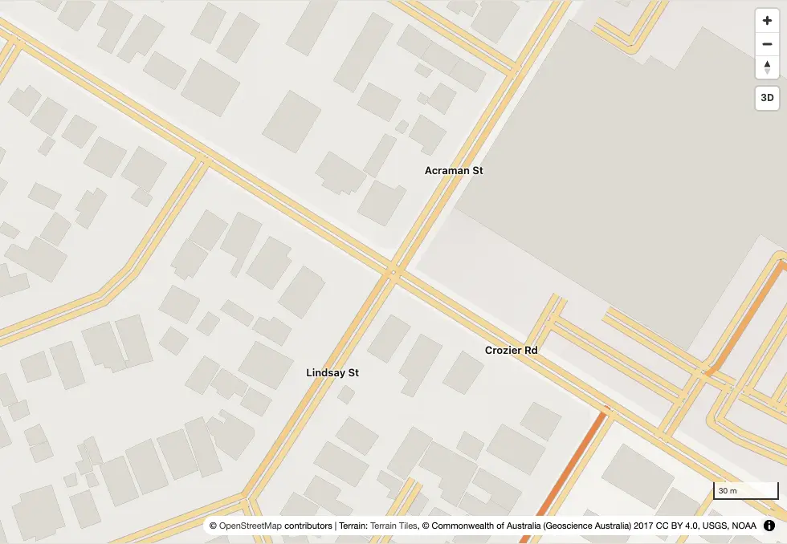
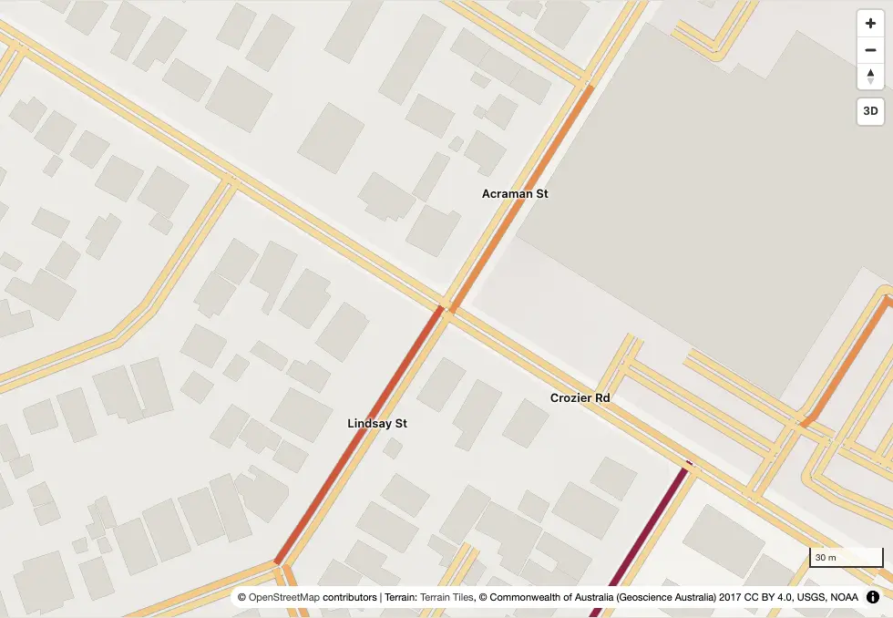
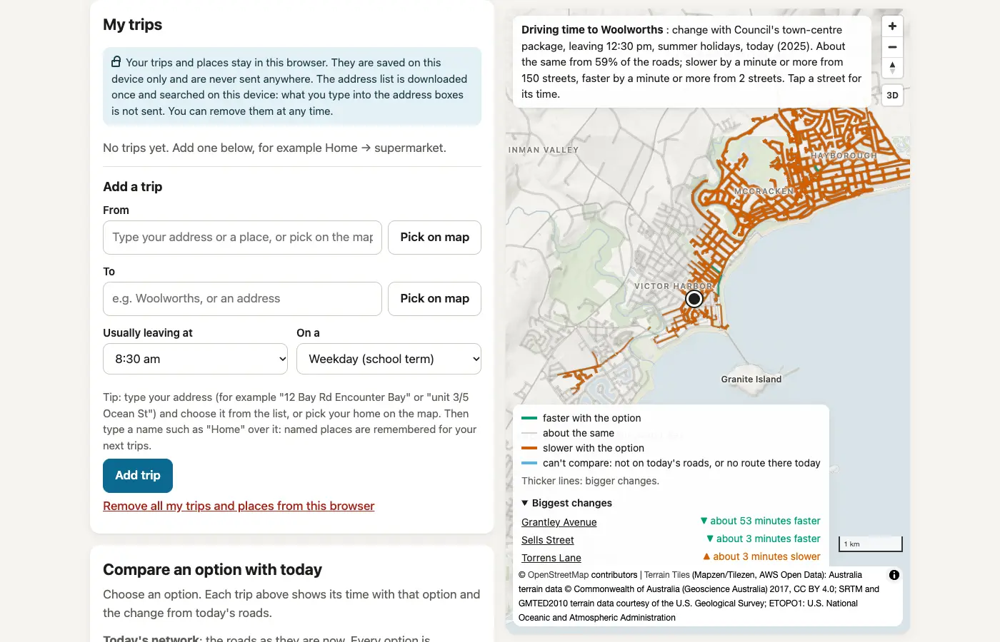
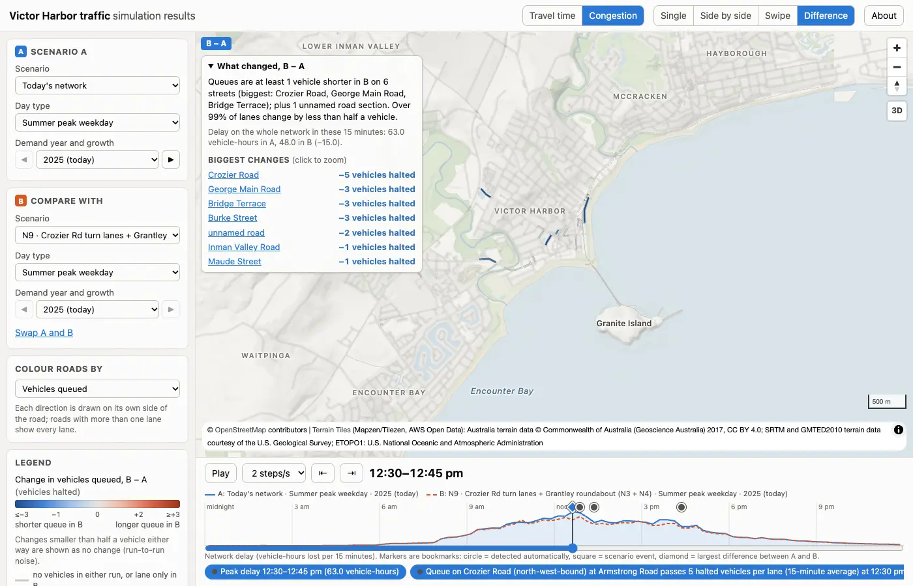
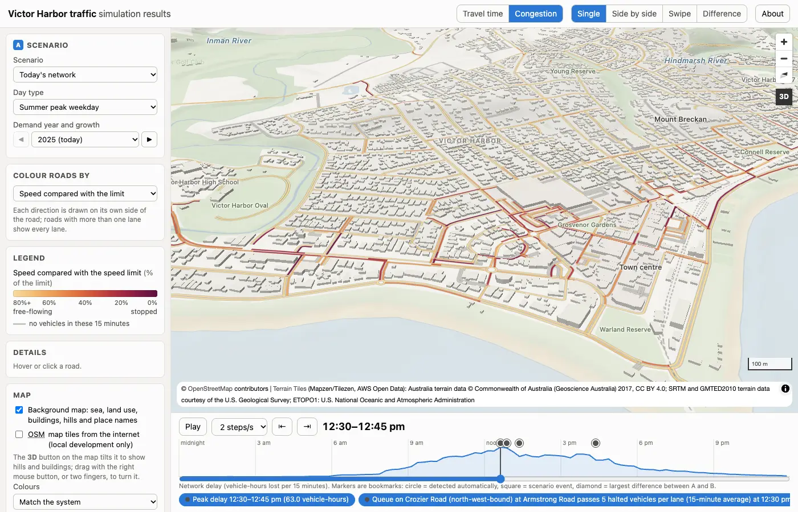

About the years. The simulation's "now" is built on 2025 data. Future years are written as 2031 (in about 5 years) or 2041 (in about 15 years). "High growth" means the State's high-growth population targets.
1The council's town-centre package makes traffic worse, for no traffic gain
The package is: 30 km/h in the town centre, shared streets, a one-way loop (Torrens St, Eyre Tce, Flinders Pde and the Esplanade), and traffic signals at Torrens St / Seaview Rd and Torrens St / Crozier Rd.
In the simulation, with today's traffic (2025 data), trips take a little longer on average and much more time is spent stopped in queues.
Extra time stopped in queues with the council package, compared with today's roads
Most single trips change by only seconds, so an average can look small. The cost is not spread evenly: it lands on particular streets, at particular times of day, as the next section shows.

2It hurts specific streets and people
Trucks on the foreshore
The clockwise loop sends trucks via Bridge Tce and the north end of Flinders Pde into Coral St, the foreshore end of the town centre. On a summer day about 80 trucks a day take that path under the council package, and about 160 with the loop on its own, where today there are about 15. Traffic of all kinds on that stretch roughly doubles (about 2,600 → 5,200 vehicles a day).
Trucks a day into Coral St via Bridge Tce and north Flinders Pde

Side streets
Acraman St carries about three times today's traffic, and it already has crash hotspots. Residents of Lindsay St wait about 80 seconds instead of 15 to get out onto Crozier Rd.
Wait to get out of the side street, summer peak (worst approach)
Today's roads

Council package

Everyday summer trips
- Encounter Bay to a supermarket: about a minute longer on a typical summer trip.
- McCracken to medical services: 1 to 1.5 minutes longer.

Why the damage spreads
Drivers pick the fastest route. When the town centre slows down, traffic moves into residential streets to get around it. That is why the harm shows up in streets the plan does not mention.
Which part does it
On a summer day the one-way loop is the largest single cause. On a school-term weekday the new signals are.
3It was never tested or costed
- The only technical report does not include it. The council's engineering consultant SMEC's Phase 1 report (Revision 2, August 2026) contains no one-way loop and no 30 km/h proposal. Its model is a "simplified transport demand model" of a typical weekday, and only a "Do Nothing" network was run.
- Testing comes after the consultation. Testing, modelling and costings are scheduled for February to June 2027.
- About five minutes of debate. At the 26 October 2026 council meeting (item 10.1), no speaker mentioned the loop, 30 km/h or the signals. A councillor asked for cost estimates; the fact sheet has no costs.
- Old counts. The newest town-centre traffic counts are from April 2017, during school holidays. SMEC's own volumes are half to two-thirds of the Department for Infrastructure and Transport (DIT) counts.
The State's own speed-limit guide
DIT's Speed Limit Guideline (version 3, October 2023) says a 30 or 40 km/h limit
"is not intended for streets with short holiday or tourism peaks"
It also says freight and major traffic routes are unsuitable, and that 30 km/h needs a road designed for it and alternative routes. Torrens St and Hindmarsh Rd are State roads and DIT freight routes.
4Cheaper, targeted fixes do better
Fix the delay where it actually is.
In the simulation, the delay is mostly side-street right turns onto single-lane main roads around midday:
- Victoria St, between Bay Rd and Torrens St;
- side streets off Hindmarsh Rd;
- the Bridge Tce / Grantley Ave link onto Hindmarsh Rd;
- as the town grows, Crozier Rd and Greenhills Rd joining Armstrong Rd (Crozier Rd waits 53–74 s in 2041, in about 15 years, at high growth).
It is not the town-centre roundabouts: most of their approaches wait 3–8 seconds.
Change in total time stopped in queues, compared with today's roads

Caveat. These are rough layouts, not designs. Cost classes are guesses: $ under $0.5 million, $$ $0.5–3 million, $$$ $3–10 million. Options N4 and N9 sit beside a level crossing, which a real design would have to deal with.
5The ring road
The consultation offers Option 1, a new outer freight ring road, and Option 2, keeping the current ring along Welch Rd and Armstrong Rd.
- Widening the current ring to four lanes, on its own, makes 2041 worse unless the Crozier Rd junction is fixed: drivers from Crozier Rd wait about 29 s now, and 50–55 s with the wider ring.
- Roundabouts at its Crozier Rd and Greenhills Rd junctions help most.
Modelled as described, in two plausible alignments because the council map is indicative: about 10 km from Inman Valley Rd to Victor Harbor Rd on existing roads and short new links, with the existing ring lowered to 60 km/h. In 2041 (in about 15 years, high growth) on a term weekday it adds about 18–30% to time stopped in queues compared with today's roads. Slowing the existing ring pushes traffic onto Hindmarsh Rd, Adelaide Rd and the town centre, and trucks on town-centre streets rise about 28%.
Option 2, keep the ring and fix its junctions (roundabouts at Armstrong/Crozier and Armstrong/Greenhills, with the Grantley roundabout): about 24% less. Option 1 is also by far the most expensive. Method and gaps: S9 — The council's ring-road options (VHITS Option 1 vs Option 2).
6Growth is not solved by any option tested
The 2041 runs load the new suburbs onto today's roads, without the new streets and link roads that will come with them. So they show the size of the problem, not the answer. That is why the whole network, including those future roads, needs to be modelled before any one piece is committed.
7What we ask Council to do
- Publish the model and the data (counts, calibration, assumptions) and have them peer reviewed.
- Model every option, including summer and event days, against both growth scenarios, and publish the results before endorsing a Vision.
- Collect current counts: term-time and summer turning counts at the town-centre intersections, and permanent counters on Torrens St and Hindmarsh Rd.
- Trial before committing, with temporary works through busy periods and before/after data, with success criteria published in advance.
- Put alternatives on the table: turn lanes and roundabouts where the delay is, time- or event-based speed limits instead of a permanent 30 km/h, and keeping two-way streets.
- Publish cost estimates for each element, as a councillor asked on 26 October.
- Answer the questions: who proposed the loop and 30 km/h, and on what evidence; why the outer freight ring road became part of the Vision; the costs; and DIT's position.
8How sure are these results?
- Built from public data. The simulation uses Simulation of Urban Mobility (SUMO), an open-source traffic simulator, with roads from OpenStreetMap, people and trips from the Australian Bureau of Statistics (ABS), and counts from DIT and the council.
- Partly calibrated. The town centre carries about 80% of the counted traffic, so town-centre delays are more likely understated than overstated.
- Read the results as differences between options, not as exact times.
- Everything is open. Every source and assumption is in the knowledge base.
9Explore it yourself
